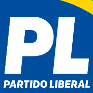

Partido dos Trabalhadores
O Partido dos Trabalhadores (PT) é um partido de centro-esquerda, sendo um dos maiores e mais importantes de movimentos de esquerda da América Latina.
O PT foi fundado em 1980 por Flávio Jorge, mas atualmente sua principal presidente é Gleisi Hoffmann.
Em junho de 2024 o partido contava com mais de 1 milhão e meio de afiliados.
O PT governou o Brasil com os presidentes Luiz Inácio Lula da Silva em um primeiro mandato de 2003 até 2006 e em um segundo mandato de 2007 até 2011, com Dilma Rousseff, a partir de 2011 a 2016, e novamente com Lula de 2022 até 2026.

Partido Socialismo e Liberdade
O Partido Socialismo e Liberdade (PSOL) foi criado por Paula Coradi em 2004. Um de seus principais representantes é Guilherme Boulos, candidato a prefeito da cidade de São Paulo, Boulos foi líder do movimento dos trabalhadores sem teto (MTST) e foi importante em questões de habitação, desigualdade e direitos humanos. Boulos se candidatou a prefeito de São Paulo em 2020, onde ficou em segundo lugar no segundo turno, e se candidatou novamente em 2024. Sua principal proposta para sua candidatura é a justiça social. O PSOL é um partido de esquerda que se posiciona como uma força política progressista, defendendo princípios como justiça social, igualdade, direitos humanos e políticas ambientalistas.

Movimento Democrático Brasileiro
O Movimento Democrático Brasileiro é um partido político de centro, criado em 1980 para dar continuidade ao partido de mesmo nome que existia durante o período da Ditadura Militar.
O MDB é um partido que engloba políticas tanto de direita como de esquerda, por isso é considerado um partido de centro.
Além disso, é o maior partido do país, contando com 2.083.645 filiados (2024), e é o partido na qual faziam parte os ex-presidentes Tancredo Neves, José Sarney, e Michel Temer.

Partido Liberal
Fundado em 1985 pelo falecido deputado federal Álvaro Valle, o Partido Liberal foi criado aproveitando a reabertura política onde vários novos partidos surgiram, o Partido Liberal é um partido de direita que possui ideias e doutrinas liberais.
Desde 1987, o Partido participa de eleições executivas lutando contra a violência das cidades, a degradação buscando pela qualidade de vida.
Com o passar do tempo ele se junto com o (PGT) Partido geral dos trabalhadores e o (PST) Partido social dos trabalhadores
E por causa da cláusula de barreira o PL começou a recair, por isso se juntou ao Prona (Partido de Reedificação da Ordem Nacional).Criado por Enéas Carneiro.
O Partido Liberal teve como representante Jair Bolsonaro, que em 2018 foi eleito a presidente do Brasil ainda filiado ao Partido Socialista Liberal.
O Partido Liberal também disputou as eleições para presidente em 2021 novamente com Jair Bolsonaro.
